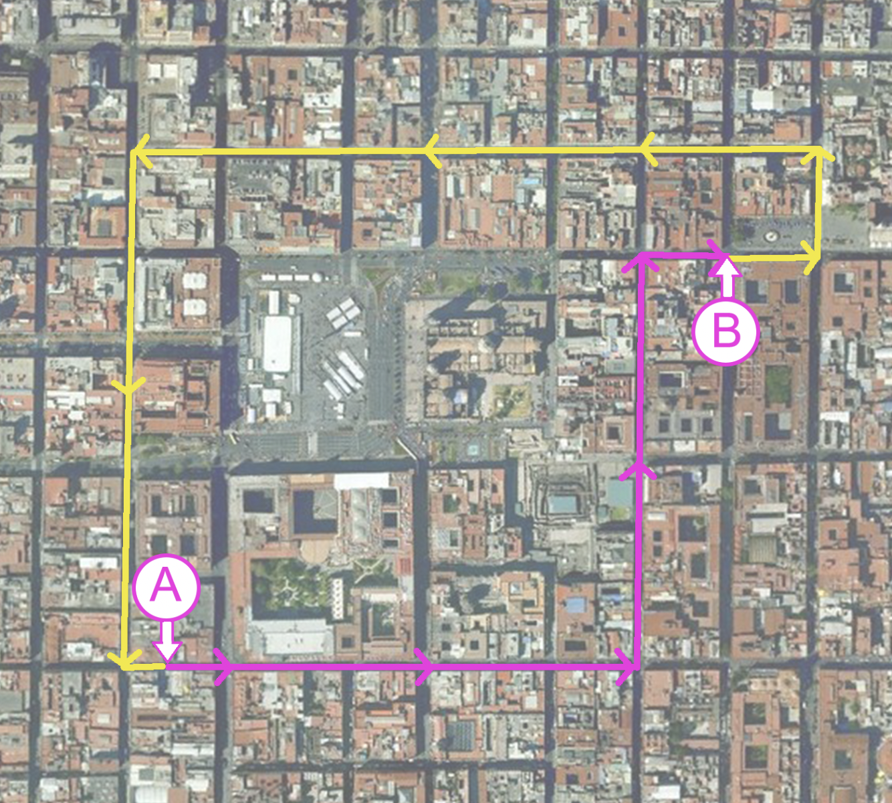
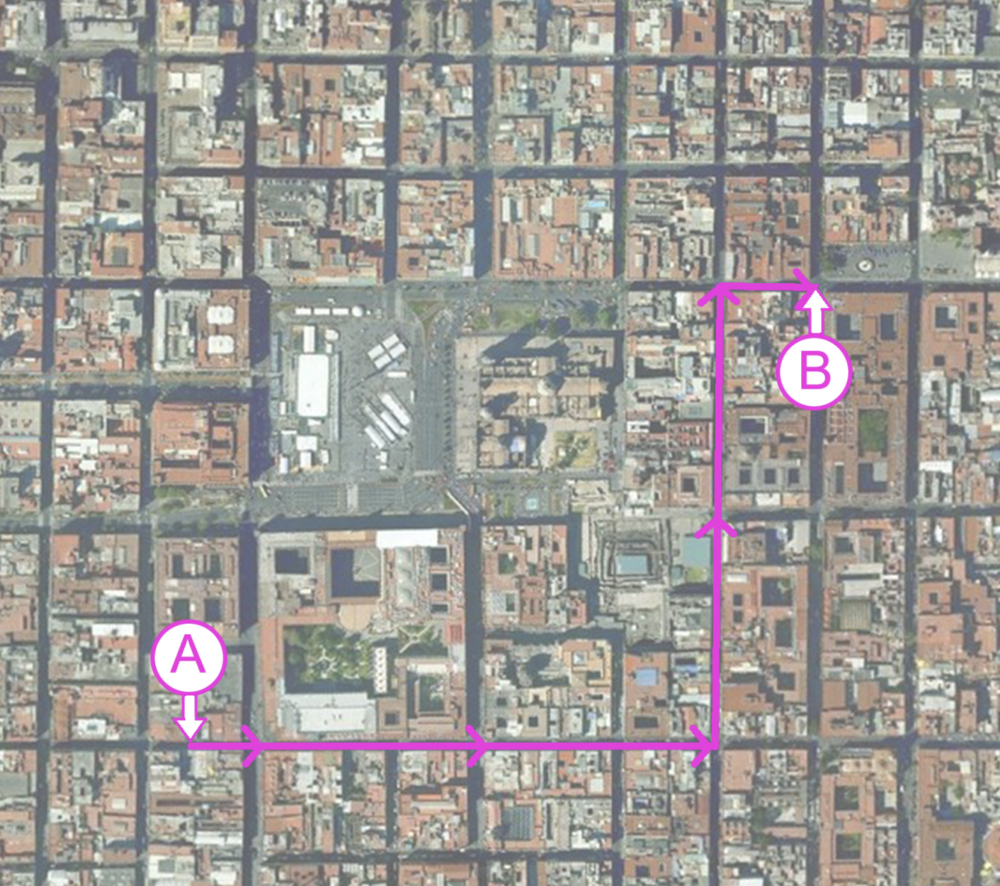
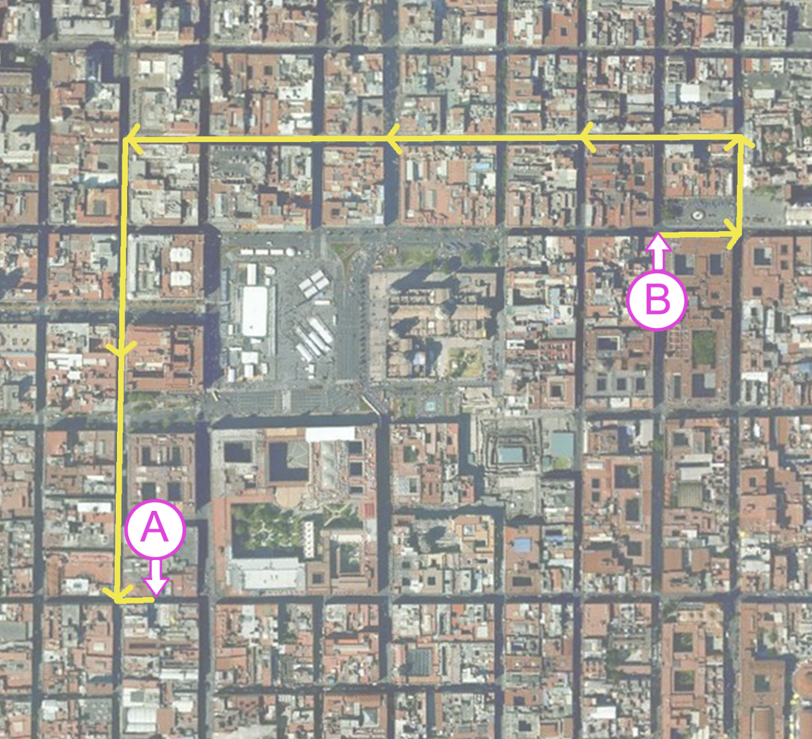
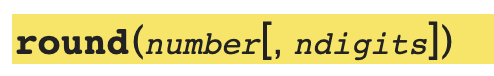

Lecture Notes 06: Intro to Functions
Execution Control Flow
Imagine you want to give someone directions of how to drive from A to B in Mexico City, and then, how to return through a different path:

Low level of abstraction:
If this person has never driven, you might have to say a ridiculously detailed and repetitive set of instructions like:
To go A to B
- Get into the car
- put the key in the ignition
- turn the key
- put the car in Drive
- press the accelerator until you reach 1000 feet
- turn the wheel left until the car is facing 90 degrees left from the "previous direction",
- then straighten the wheel
- press the accelerator until you reach 1000 feet
- turn the wheel right until the car is facing 90 degrees right from the "previous direction",
- then straighten the wheel
- press the accelerator until you reach 200 feet
- press the breaks until you get to 0 mph and park.

To go B to A
- Get into the car
- put the key in the ignition
- turn the key
- put the car in Drive
- press the accelerator until you reach 200 feet
- turn the wheel left until the car is facing 90 degrees left from the "previous direction",
- then straighten the wheel
- press the accelerator until you reach 200 feet
- turn the wheel left until the car is facing 90 degrees left from the "previous direction",
- then straighten the wheel
- press the accelerator until you reach 1450 feet
- turn the wheel left until the car is facing 90 degrees left from the "previous direction",
- then straighten the wheel
- press the accelerator until you reach 1200 feet
- turn the wheel left until the car is facing 90 degrees left from the "previous direction",
- then straighten the wheel
- press the accelerator until you reach 1200 feet
- press the breaks until you get to 0 mph and park.

Activity 1 [2 minutes]:
Is there any way we could optimize this?
Do you see any wasted effort?
High level of abstraction:
Let's say you make flashcards to teach this person to drive; You give them these:
turn_on_car ():
- Get into the car
- put the key in the ignition
- turn the key
- put the car in Drive
drive_straight (x feet):
- press the accelerator until you reach x feet
turn_right (x degrees):
- turn the wheel right until the car is facing x degrees right from the "previous direction",
- then straighten the wheel
turn_left (x degrees):
- turn the wheel left until the car is facing x degrees left from the "previous direction",
- then straighten the wheel
apply_breaks ():
- press the breaks until you get to 0 mph and park.
Then, you are able to say more general instructions like:
To go A to B
- turn_on_car ()
- drive_straight (1000)
- turn_left (90)
- drive_straight (1000)
- turn_right (90)
- drive_straight (200)
- apply_breaks()
To go B to A
- turn_on_car ()
- drive_straight (200)
- turn_left (90)
- drive_straight (200)
- turn_left (90)
- drive_straight (1450)
- turn_left (90)
- drive_straight (1200)
- turn_left (90)
- drive_straight (50)
- apply_breaks()
-
Note 1: When giving the instructions, we must "wait" for each step of the "invoked" set of actions to get executed, and only then do we continue where we left off. In other words, the sequence of execution (or execution flow) jumps around.
-
Note 2: There are two sections of actions here:
-
the "memorized" sequences (or known routines);
-
the set of instruction calls.
Functions: Motivation
Answer the following questions:
Activity 2 [2 minutes]:
Why go through the trouble of doing all of this?
What possible benefit could we get by using these "functions"?
(Wait; then Click)
- Reuse: Avoid unnecessary repetition
- Reduce: Modular structure, better organization
- Recycle: Use functions that you created a while ago for something you need now!
Ok. Let's say you buy this.
How do we actually make and use these functions?
Indentation
Just as in the example with the "Driving Directions", there are two "types" of sections of instructions:
- The section that has series of actions that have been memorized but are not currently in use
- And the section that has either simple instructions to be executed, or calls to routines that should be executed at that point
It is important to be able to
Package or
Encapsulate series of statements inside a block so that they are considered to be "together".
In python, we do this with
indentation
Indentation in Python
A piece of code indented with respect to the previous line means "this code block is
inside the previous block header".
In Python, indentation indicates the begining and end of a section block.
It is structured like a piece of text where you indent once every time you start a new section or sub-section.
In the following lesson sections, we'll show how this is used:
Functions: How to make them?
We called the ones you make "User-defined" functions.
We follow some rules to make a function:
- use the def keyword to let the interpreter know that what follows is a function definition
(it doesn't matter where the def goes as long as it is defined above where it is invoked)
when the Python interpreter encounters the def (or class) keywords, it only stores those definitions for later use and doesn’t actually execute them until you tell it to
- indicate the name of the function (use Python coding conventions.
- add a parenthesis pair to indicate the input parameter section
- inside the parens, add a coma-sepparated list of input parameters
- add a colon ( : ) to indicate the start of the function body
- indent once (2 or 4 spaces is standard, and it can be done with a single tab)
- add the body of the function
- IF the function is expected to return something, add the keyword return, followed by the value or variable you wish to return
Example 1
Let's Build a function that has the following characteristics:
- it acccepts no input
- it returns no output
- it simply prints a default message to the console (sound familiar)
# function definition
def hi():
print("hello world!")
The body of the function is indented once to tell python that it is
inside the function.
Activity 3 [2 minutes]:
Note that, if you put this in a program and run it (Try the
Scratch Pad Project in Replit), it does nothing!
Why?
(Wait; then Click)
that is just the function definition!
It's like writing the sheet music but not playing it.
We need a statement to invoke (or call) the function!
[2 minutes]:
Next, how do we call the function?
(Wait; then Click)
Using its name directly!
Note that, since it does not take any parameters, we do not add any arguments to the function invocation!
Example 2
Let's Build a function that has the following characteristics:
- it accepts 1 input parameter (an integer)
- it returns no output
- it simply prints a default message to the console (sound familiar)
# function definition
def append(num):
print("I got this input:", end=" ")
print(num)
# statement area
append(2)
print("done!")
[2 minutes]:
Write and run this code in replit.
Now, let's try it out in the Python Tutor!:
here
There are several things to notice here, which we will discuss more deeply next class.
Example 3
Let's Build a function that has the following characteristics:
- it accepts 1 input parameter (an integer)
- it returns as output the next integer
- it does not print anything to console
# function definition
def next(num):
return num + 1
# statement area
nxt = next(2)
print(nxt)
print("done!")
[2 minutes]:
Write and run this code
Example 4
Let's Build a function that has the following characteristics:
- it accepts 2 input parameters (two integers)
- it returns as output the remainder of dividing the first by the second integer
- it does not print anything to console
# function definition
def mod(a, b):
return a%b
# statement area
remainder = mod(256, 5)
print(remainder)
[2 minutes]:
Write and run this code
The main
Python executes instructions top-down unless we split the code into "functions".
There is a way to force Python to start execution inside a function.
This is a good idea for reasons that will be explaned later.
Forcing the start of a main function
The following construction is standard in a Pyhton program that we want to be able to
1) execute starting in a know location (main), and
2) import into another python program (and use any functions defined in it)
The construction we'll use is this one:
1
2
3
4
5 | def main():
print("Hello World!")
if __name__ == "__main__":
main()
|
Try
it out
Let's see another (not recommended) example, to get another view of how this works:
1
2
3
4
5
6
7
8
9 | def main():
print("Larry")
print("Curly")
if __name__ == "__main__":
main()
print("Moe")
|
Answer the following question before trying it out:
Activity 6 [2 minutes]:
- What is the output of this program?
Try
it out
We will not explain this section yet:
if __name__ == "__main__":
main()
Sufice it to say:
It forces the sart of the function main.
From now on, except for some in-class examples, we'll structure more and more complex code using this approach!
Multiple returns (simple version)
A function can return multiple elements, if needed. We'll see a more advanced way to do this later, but for now the following works:
def sum_and_mult ( a, b):
num_sum = a+b
num_mult = a*b
return num_sum, num_mult
def main ():
n1 = 3
n2 = 8
x, y = sum_and_mult(n1,n2)
print("the sum of {} and {} is {};" \
"their mult is {}" .format(n1, n2, x, y) )
if __name__ == "__main__":
main()
You can try it out
Here
Using Functions: A worked Example
Look at the following code:
def turn_on_car ():
""" prints steps to turn on car
"""
print("Get into the car")
print("put the key in the ignition")
print("turn the key")
print("put the car in Drive")
def drive_straight (x):
""" prints steps to drive some distance
Args: an integer representing a distance in feet
Returns: nothing
"""
print ("press the accelerator until you reach {:d} feet".format(x))
def apply_breaks ():
""" prints steps to stop a car
"""
print("press the breaks until you get to 0 mph and park.")
def turn_right (x):
""" prints steps to turn to the right
Args: an integer representing an angle in degrees
Returns: nothing
"""
print("turn the wheel right until the car is facing {:d} degrees right from the 'previous direction',".format(x))
print("then straighten the wheel")
def turn_left (x):
""" prints steps to turn to the left
Args: an integer representing an angle in degrees
Returns: nothing
"""
print("turn the wheel left until the car is facing {:d} degrees left from the 'previous direction',".format(x))
print("then straighten the wheel")
# main() IS THE START POINT FOR EXECUTION
def main():
print("You call your friend and tell them: ")
#here is where we'll add the function "CALLS"
# This defaults to calling the main function:
# (We'll discuss this later)
if __name__ == "__main__":
main()
[2 minutes]:
Now Answer this questions:
- What is the order of execution?
- What is printed?
(Wait; then Click)
- The interpreter "memorizes" all the function blocks (def blocks)
- The block of code at lines 58-59 "calls" the main () function.
- All statements reachable after this point are executed in order (considering function calls)
Now go to the Replit Exercise called "Driving Directions" and complete the "directions" by adding the function calls to the main() function.
Functions: Terminology
| Term |
Meaning |
| function |
A named block of code |
| definition |
The list of statements constituting the body of the function: def |
| call |
Using the function's name to transfer executing control to it |
| invocation |
Invoking a funtion is the same as calling it |
| parameter |
An identifier/variable set in the function definition to recieve input passed to the function |
| argument |
The value passed to the function and bound to the parameter |
| binding, bound |
The act of assigning a variable/parameter a specific value |
| return value |
The value of the expression returned via return |
Functions: API for Built-in functions
We use built-in functions depending how they were constructed.
We know hoe to use a thing whe it is intuitive OR when it comes with instructions!
The instructions for using built-in functions for programming an application is called the
Application Programming Interface, or API.
A good API for Python can be found here: Python 3.9.7 API
The API section specific to built-in functions can be found here: Built-In Functions in Python 3.9.7 API
For example, the info for the round function will have a way of using it:

Note that the things in brackets are optional parameters (you can choose to add them if you need them).
As an example of how to read the input with the round function:
- round(2.672) # which will round up to 3; or, with
- round(2.672, 2) # which will round down to 2.67
The description also indicates what the function
returns if anything at all
Before next class (Monday)
[Due for everyone]
Homework 02 is out and due on 02/11 BEFORE 17:00 (5PM)